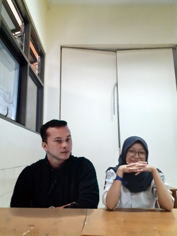

Who I am?
| Nama | : | Sabina Cahya Rianti |
| TTL | : | Bogor, 23 November 2002 |
| Jenis Kelamin | : | Perempuan |
| Agama | : | Islam |
| Alamat | : | Gunung putri-Bogor |
| Kewarganegaraan | : | WNI |
p.s Nicholas Saputra lagi jemput ke sekolah
This web will show you my bio-data, enjoy it!XD
| Nama | : | Sabina Cahya Rianti |
| TTL | : | Bogor, 23 November 2002 |
| Jenis Kelamin | : | Perempuan |
| Agama | : | Islam |
| Alamat | : | Gunung putri-Bogor |
| Kewarganegaraan | : | WNI |
p.s Nicholas Saputra lagi jemput ke sekolah
Kalo ditanyain hobi saya apa, gatau deh sumpah. Kalo jaman SD sih klise jawabnya "baca buku". Sekarang? Baca buku? Baca webtoon aja deh akuu hehe. Waktu SMP ditanya hobi sih jawabnya "Dengerin musik". Kalo sekarang apa ya? Hmm, dengerin musik suka sih. Yaudah deh saya anggap hobi saya dengerin musik aja sekarang. Trus kalo ada yang nanya lagi "Sukanya dengerin lagu apa?", saya kayaknya bakal jawab "Kepo banget sih sama gue, kenapa? suka?" hahaha gak deng, bercanda. Saya suka lagu yang enak. Apa aja pokoknya asal menurut telinga saya enak. Tapi sekarang saya gak suka sih lagu yang jedag jedug (read:edm dan teman-temannya), dulu saya suka banget waktu SMP. Sekarang sih yang santai-santai aja lagunya. Eh lagunya .feast saya suka juga deh hahahha, walaupun lagunya heboh tapi kan mereka bukan edm hehe. Oke saya ngaku, saya lumayan (read:banyak sih) suka sama lagu lagu dari penyanyi indie. Hah indie? Senja? Kopi? Engga kok saya bukan 'anak indie senja kopi', saya cuma suka lagu-lagu mereka, suka kopi juga sih hehehe. Padahal waktu pertama kali denger lagu macem gitu respon saya adalah "Lagu apaan sih ini? Aneh banget?". Itu respon saya waktu kakak saya nyetel lagunya fourtwnty di mobil sepanjang jalan dari Bogor sampe Semarang. Mabok gak tuh sepanjang jalan lagunya indie semua. Eh beberapa bulan kemudian saya malah suka (read:cinta mati) sama lagu-lagunya Banda Neira, merembet ke Fourtwnty, Adhitia Sofyan, ERK, Payung Teduh, Feast, Hindia dan kawan-kawannya. Sampe akhirnya saya mengakui selera kakak saya dan saya soal musik sama. Apa alesannya? Karena kita bisa sing along lagunya Hindia satu album diulang-ulang di mobil sepanjang perjalanan Semarang-Bogor waktu liburan kemarin. Cukup gila? Ah kayaknya sih engga ya biasa aja. Oh ternyata kami tidak hanya berdua, ada juga kakak sepupu saya yang juga sama 'edan' nya dengan kita, eh tapi kan kita gak edan. Dia nyetel satu albumnya Hindia all night long pake speaker dari kamarnya. Biasa aja sih hehe. Kenapa jadi out of topic ya? kan lagi ngomongin hobi saya. Oh iyaa, saya ingat apalagi yang saya suka. Saya suka dengar radio. Diawali dengan kebiasaan denger radio di mobil dari dulu setiap berangkat sekolah, ternyata kebawa sampe rumah. Saya hampir selalu dengerin radio setiap malem sebelum tidur. Kenapa? Sebenernya saya gabisa tidur kalo keadaan sekitar sepi tanpa suara hehe. Hm, apalagi ya? Segitu aja deh kayaknya. Makasih udah baca tulisan ini sampe sini. Kalo saya jadi kalian sih gabakal saya baca tulisan gaje kayak gini. Hahaha